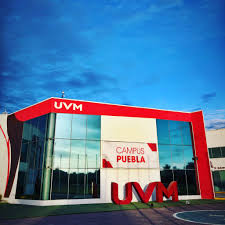

UVM – Campus Puebla | Área de Humanidades
-
Psicología: Carrera que estudia el comportamiento y los procesos mentales con enfoque clínico, educativo y organizacional.
-
Derecho: Programa que forma profesionistas con una sólida base legal y ética para intervenir en el ámbito jurídico nacional e internacional.
-
Comunicación: Enfocada en la producción de contenido multimedia, estrategias de medios y gestión de la comunicación digital.
-
Relaciones Internacionales: Analiza los fenómenos políticos, económicos y sociales del entorno global, con visión estratégica.
Universidad del Valle de México – UVM
